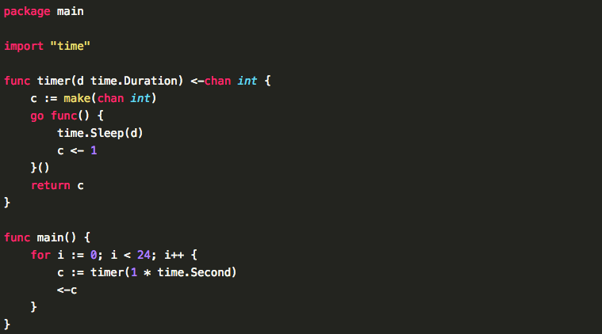
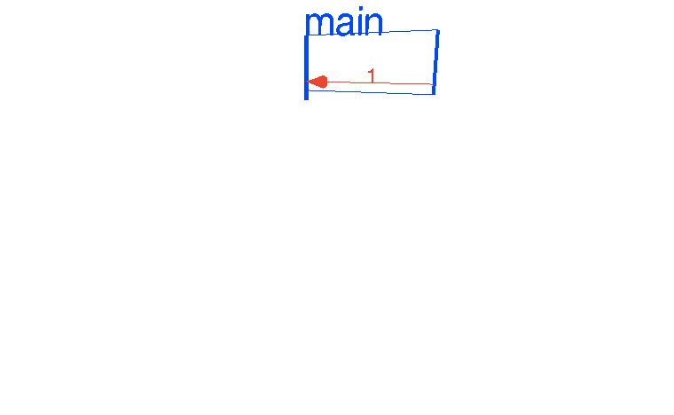
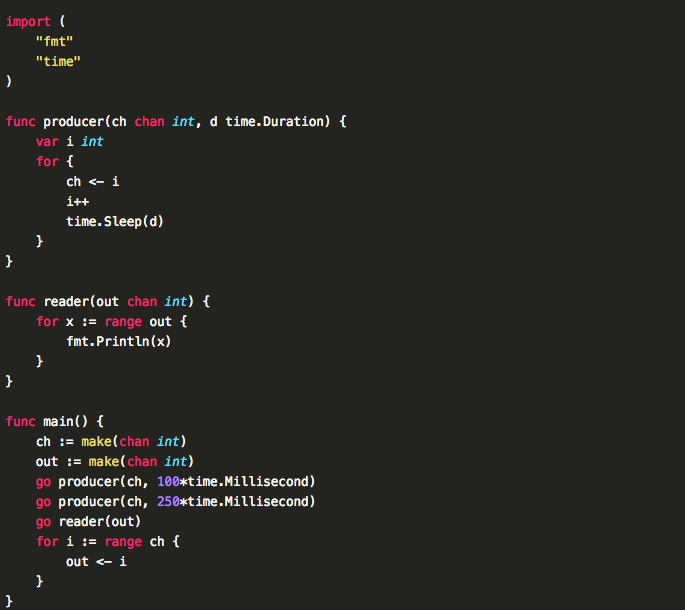
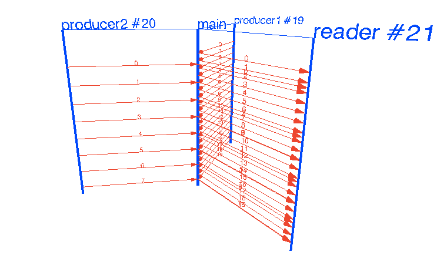
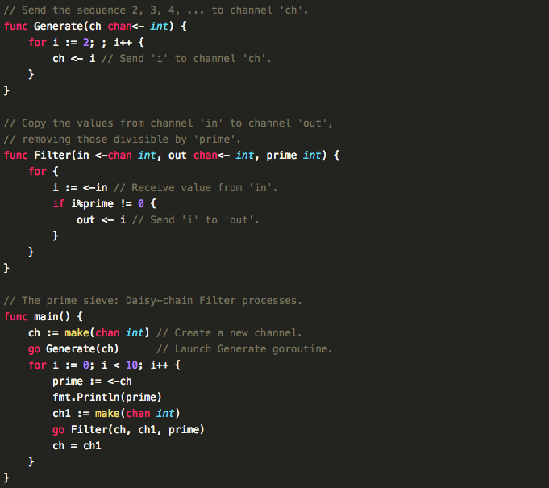
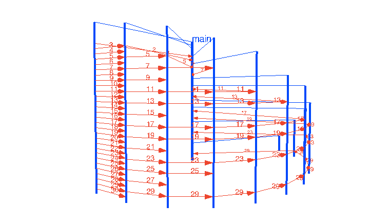

{{go_intr}}
每周六（9:30-18:30）
最新一期{{go_time}}号开课，火爆招生中
历时3个月（每周{{go_week}}，15天）
面授费用和网络班学费（提供课堂视频、多媒体直播、终身免费重听）请咨询QQ
1 掌握迄今为止最为强大易用的分布式编程语言。像脚本语言一样易用，运行效率和C比肩。
2 为向架构师，技术总监发展奠定基础
3 带领学员在实战中学习，摸爬滚打中积累经验
1. 实战爬虫
2. http 相册
3. 服务器命令批量分发系统
4. 简单 KV 存储系统
5. P2P 文件分发系统
6. PRC Client&Server
7. 支持版本管理的配置服务器
饼干老湿 某在线旅游网站基础架构部架构师，曾经在腾讯工作，见证了在线旅游行业整个基础架构&自动化运维从无到有的整个过程。主要技术方向是高并发以及分布式系统的设计与实现。
PC老湿 大学时期就负责学校官方网站的运维工作，实习期间加入豆瓣，有幸成为豆 瓣Top20员工，从事Python开发及运维工作，后在BAT从事自动化运维，见证BAT运 维自动化从无到有。擅长系统底层、分布式系统开发，热衷于开源运动，给 memcached、SETI@Home等多个开源项目贡献过代码
golang拥有无与伦比的并发能力，可以用极少的代码完成复杂架构的设计。
     